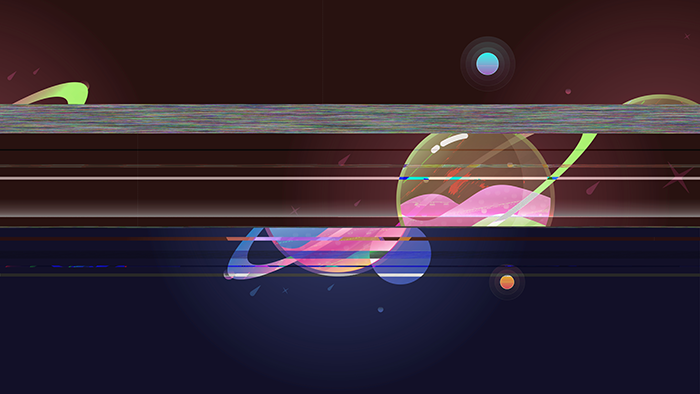
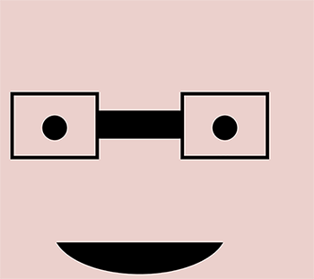
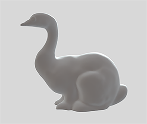
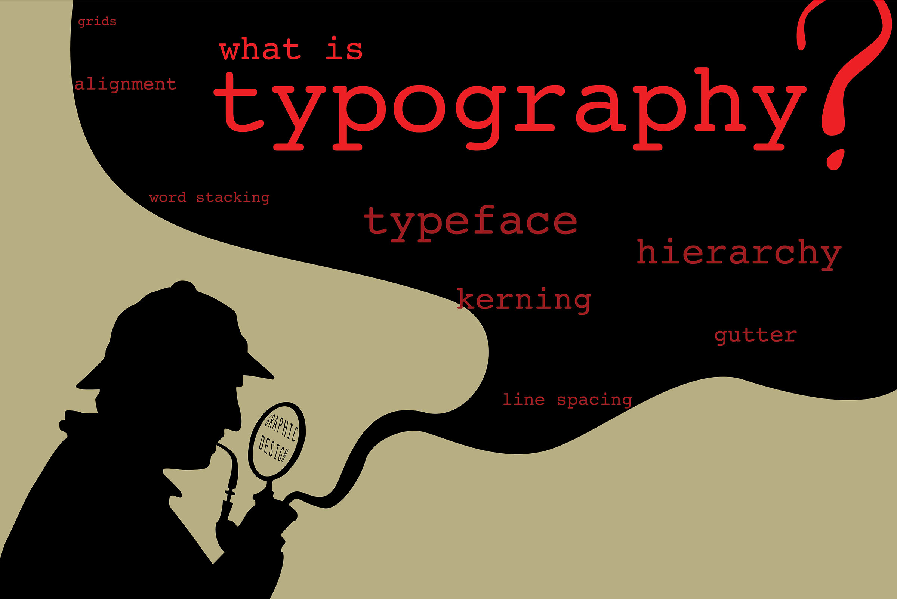

Meme designed and edited in Photoshop - Sept. 4. 2019.
Video designed frame by frame in Illustrator and edited in Adobe After Effects - Sept. 23. 2019.

This is the before and after image of a glass planet before I edited it in Audaciy - Oct. 14. 2019.

Self Portrait coded in Processing - Oct 30. 2019.

3D Model designed in Meshmixer - Nov. 6. 2019

Vector Art drawn with Pen Tool in Adobe Illustrator. Dec. 9. 2019.
My inspiration for the final project was simple: I wanted to show what I learned in ART 74 and put some sort of graphic design twist to it and show off my love for the mysteries of Sherlock Holmes. The idea of this artwork was to display what I’ve learned in typography class and the topics we’ve covered in that class and combine it with the Illustrator skills I’ve learned.
I think what really pushed me to make this artwork was everything I’ve learned this semester. In typography class, I saw so much of what I learned to coincide with ART 74 and I wanted to show that. Some things that were so similar was alignment, design concepts, and presentation. These things are so important, not only in design, but also in digital media arts because my artwork will be seen by other people.
Designing something and putting it out in the world seem such an easy process with just a few quick drags and clicks of the mouse. But that is not the case. The process of a good design takes time, effort, and patience. It is a frustrating journey of trial and error that most of the time, ends in error. But that is not important. What is important is how much patience you’re willing to have to get the best results that you seek. Even though it is frustrating that not a lot of people realize how much effort and time it takes for these creative ideas to take form and come into existence, it is alright. If it is important to convey such ideas, knowing how to design a way and show people that process seems like a good idea too.
Although I did not have a shallow perspective of this process, I think I might’ve understood a little more in-depth about my future career. I learned how to be so frustrated to the extent of giving up and jumping right back up when I feel like the next try is actually going to be the one. It is a tedious, painstaking process, but it is not all unfortunate. Despite everything, I still enjoy the little bits of magic that make life a little brighter.